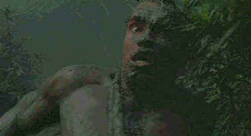

Fox/1987/107m/WS 1.85
A clever take on the classic film The Most Dangerous Game, Predator moves through its paces at breathless speed. Director John McTiernan knows how to pull the trigger on this sort of entertainment and he uses the thick camouflage of the setting to maximize suspense and action. With dynamic photography by Aussie DP Don McAlpine, and excellent special creature effects, Predator is an intensely visual movie.
 |
Don't kill 'em till you see the whites of their eyes.©Fox |
Arnold Schwarzenegger is very effective in the role of Dutch Schaefer.
In the final Alien confrontation, Schwarzenegger’s brawn and hard stare almost make
the fight seem reasonable. Carl Weathers is on hand to give a one dimensional performance
as a CIA operative and Bill Duke does a lot of muscled staring into the jungle.
Included in the first wave of DVDs from the Fox archives, Predator
is a good choice for the medium. Though it’s not presented anamorphic, the image is
very sharp. The white opening credits jump slightly, suggesting that Predator may
have problematic enhancement, but aside from some image ringing in strong transition
shots, the image is happily very stabile. The colors of the jungle are richly transferred.
Detail is excellent in all lighting conditions. The white of Arnold’s eyes stand out
clearly against his mud-covered face. And the slimy countenance of the Alien is captured
with slithery relish. Given a Dolby Digital 5:1 remix, Predator packs plenty of
bass into every explosion. The deep presence of the creature is felt through the
surrounds. The sound is very aggressive with Alan Silvestri’s pounding alongside the
hearts of the hunted.